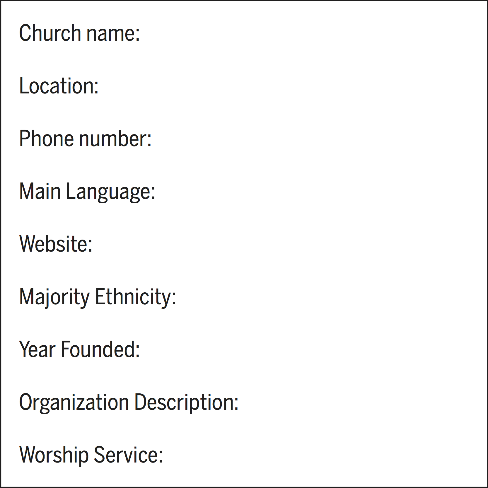
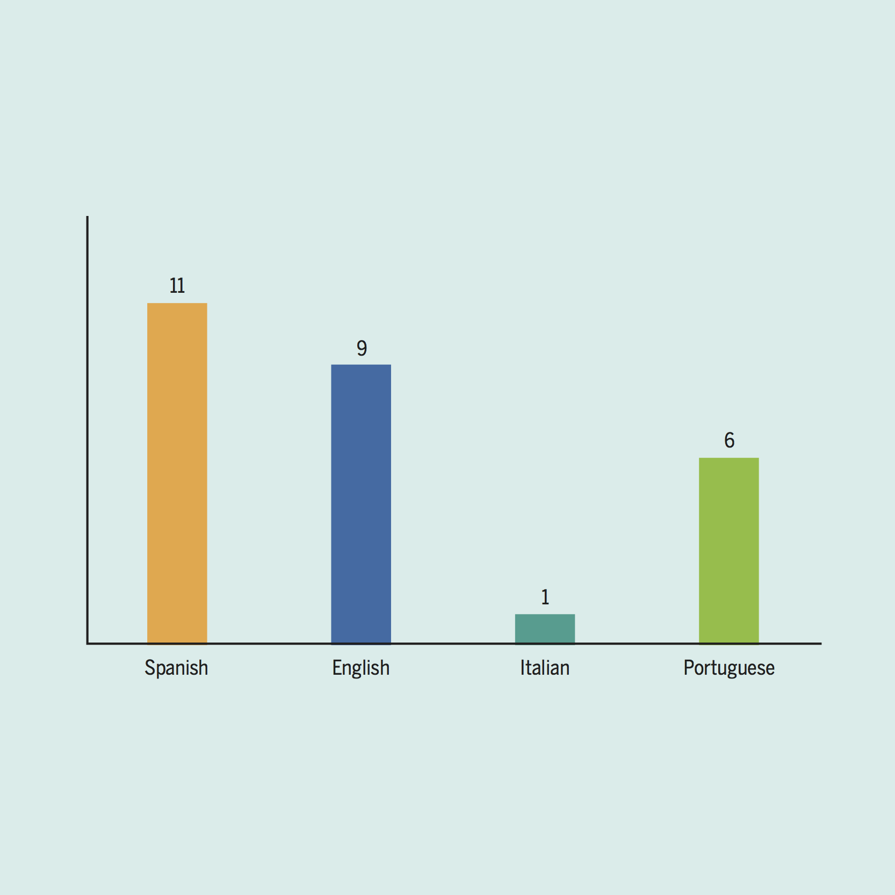

What language each churches speak in East Boston
East Boston
By Ziyi Zhao
The churches in East Boston.
In this map, you can see churches name, address and which language they speak. Is also have their own website link.

The main language for each churches.
